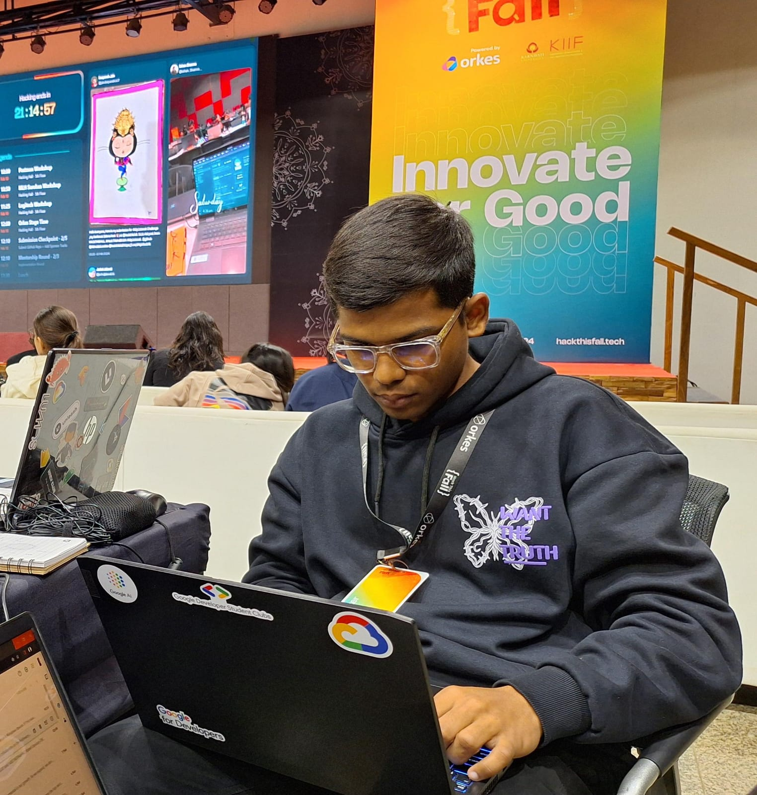

My Resume

Deepanshu Yadav
Aspiring Web Developer | Intern at Tublian | AI and ML Enthusiast
Education
- SSC (2006-2020)
Matunga Premier School, Mumbai
- HSC (2020-2022)
Kirti M. Doongursee College, Mumbai
- BTech CSE-AIML (2023-2024)
G H Raisoni College of Engineering, Nagpur
Work Experience
- Developer Intern - Tublian
(March 2024 - April 2024)
- Production Manager Lead - OpenBox
(September 2023 - Present)
- Content Strategist - CastPod Connect
(November 2023 - Present)
Skills
- Website Development
- Problem Solving in C, C++ and Python Programming languages
- Event Volunteering Management
Achievements
- Google Cloud Study Jam Winner '23
- NIV Hackathon '23 Finalist
- Smart India Hackathon Qualifier '23